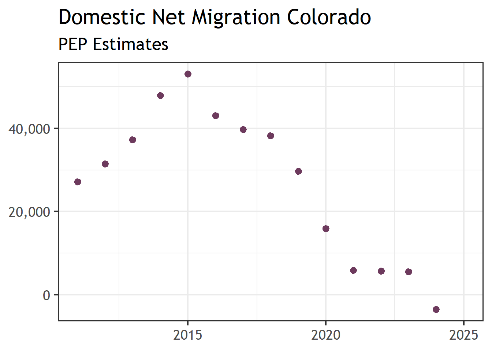
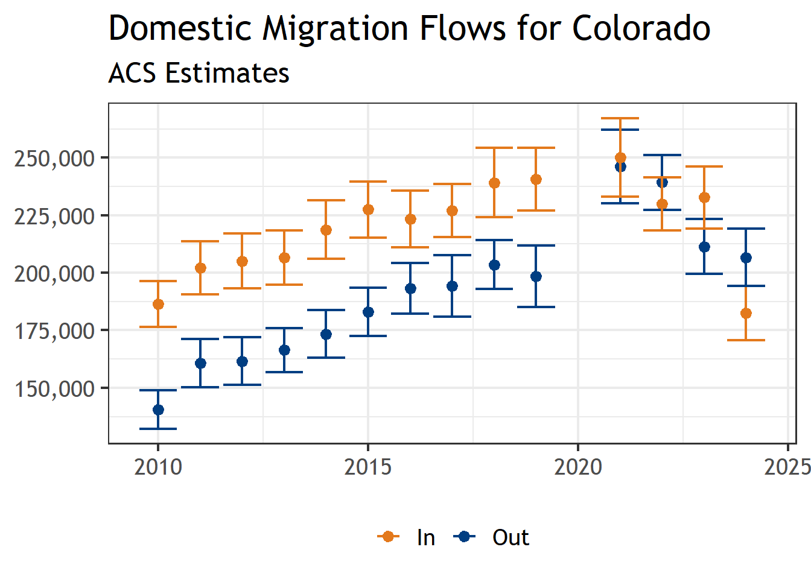
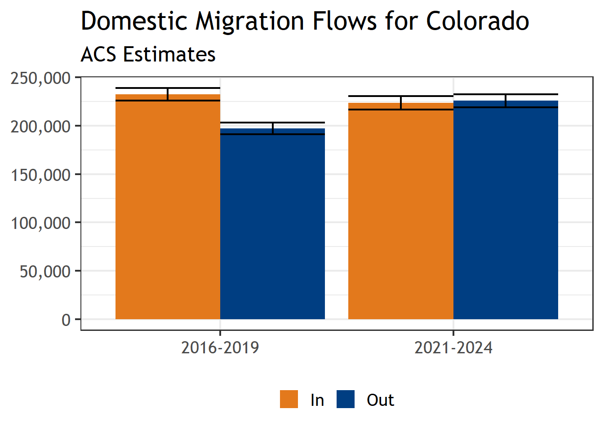
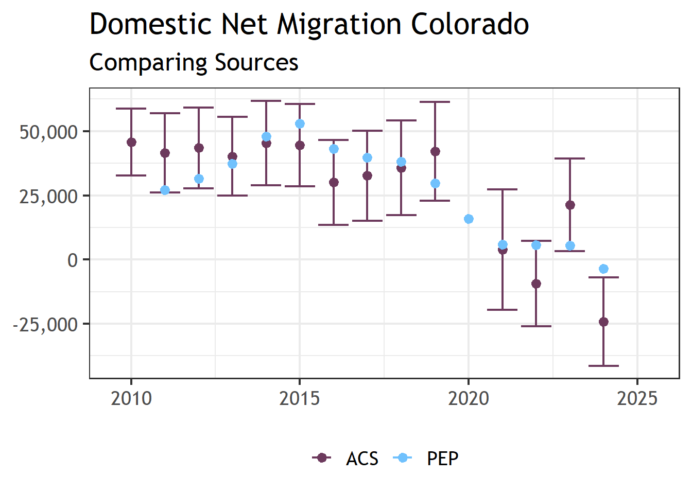
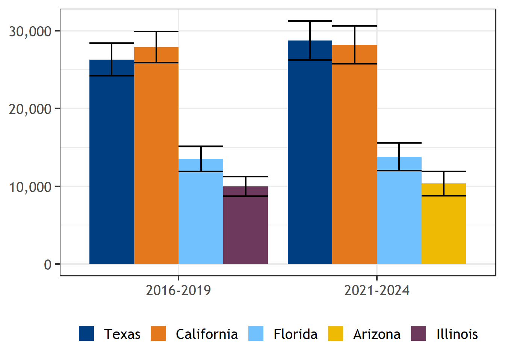
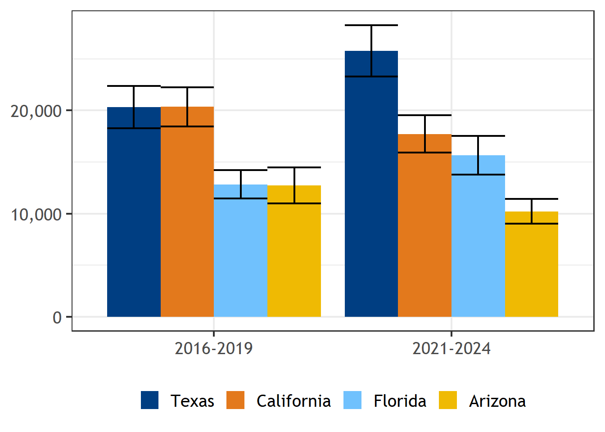

Show code
library(tidyverse)
library(readxl)
library(sdodemog)
library(tidycensus)Warning: package 'tidycensus' was built under R version 4.5.3Show code
library(scales)
# latest pep vintage we can use for this project
PEP_VINTAGE <- 2025Domestic net migration was much higher in the 2010’s than in the 2020’s
Domestic migration flows, however, peaked in 2021
Both domestic in- and out-migration flows have been falling since 2021
Domestic in-migration is falling faster than domestic out-migration
ACS and PEP data are largely in agreement with one another
PEP offers more granular trends for net migration
ACS allows for studies of migration flows
The US Census Bureau (USCB) is by far the largest producer of data related to migration in the United States. What they produce, however, can be confusing and sometimes contradictory. In this document we are going to review two of the primary sources of data pertaining to high level migration trends from the USCB, the Population Estimates Program (PEP) and the American Community Survey (ACS). In particular we are going to review two aspects of migration which can be viewed from these data sources net migration and migration flows.
Net Migration and migration flows are related but distinct concepts — one is a summary statistic, the other is directional movement data.
Net migration is the difference between the number of people moving into an area and the number of people moving out. It is a single net figure — positive when more people arrive than leave, and negative when more people depart than arrive.
Net migration can be further divided into domestic migration (moves where both the origin and destination are within the United States, excluding Puerto Rico) and international migration (any change of residence across the borders of the United States).
Migration flows, by contrast, capture the actual directional movements between places — who went where, and how many. Migration flows are derived from household and group quarter locations sampled in the American Community Survey (ACS) and responses to the migration questions on the questionnaire. They are period estimates that measure where people lived when surveyed (current residence) and where they lived one year prior. The Census Bureau produces these flows at multiple geographic scales. State-to-state migration flows are created from tabulations of the state of current residence crossed by state of residence one year ago.
Warning: package 'tidycensus' was built under R version 4.5.3Generally speaking if you want to get a top line number about migration you are going to want to get the net migration data from the PEP estimates. These data are calibrated against a number of other data sources and refined so that they capture what is happening on the ground. The flow data from the ACS is helpful however, it is an estimate which comes from a sample survey which in addition to having survey error, may also systematically miss certain populations. Below we show a graph of the estimates of domestic net migration scaled to calender year. PEP makes estimates for mid-year point to mid-year point but we can make a very rough estimate of calendar year by averaging the estimate between two sequential years. Here we see the trend of net migration beginning to fall by 2015 with it really dropping off by 2019.
pep_est_df <- "https://www2.census.gov/programs-surveys/popest/datasets/" %>%
str_c("2010-2020/state/totals/nst-est2020-alldata.csv") %>%
read_csv() %>%
filter(NAME == "Colorado") %>%
pivot_longer(CENSUS2010POP:RNETMIG2020) %>%
filter(str_starts(name, "DOMESTIC")) %>%
mutate(year = as.numeric(str_sub(name, -4, -1))) %>%
select(year, value) %>%
filter(year != 2010) %>%
bind_rows(
get_estimates(
"state", product = "components", vintage = 2025, time_series = TRUE
) %>%
filter(NAME == "Colorado") %>%
filter(variable == "DOMESTICMIG") %>%
select(year, value) %>%
filter(year != 2020)
) %>%
# value corresponds to calendar year
mutate(estimate = (lead(value) + value)/2) %>%
select(year, estimate) %>%
mutate(source = "PEP")
pep_est_df %>%
ggplot(aes(
x = year, y = estimate, color = source)) +
geom_point(color = "#6D3A5D") +
labs(x = NULL, y = NULL, color = NULL) +
theme_sdo(base_size = 18) +
scale_y_continuous(labels = comma) +
theme(legend.position = "bottom") +
ggtitle("Domestic Net Migration Colorado", "PEP Estimates")
A natural question to ask would be “Is this slowdown in domestic net migration because less people are coming or more people leaving?”. Unfortunately answering that question is not possible from the PEP estimates which only provide net migration. What we can do though is go to the ACS data and look at the flows and how those have changed over time and then compare those to the net migration estimates.
## these are the prep functions for pulling in ACS data
# function for going from state abbreviations to full names
translate_state_name <- function(x){
v1 <- c(
state.name, "District of Columbia", "Puerto Rico", "U.S. Island Areas")
names(v1) <- c(state.abb, "DC", "PR", "USISLAND")
if_else(is.na(v1[x]), x, v1[x])
}
# what are the state to state files we have available to us?
s2s_acs_raw_files <- "G:/Shared drives/State Demography Office/Data/" %>%
str_c("ACS/State2StateMigration/") %>%
list.files(full.names = TRUE)
# assign them a name based on their associated year
names(s2s_acs_raw_files) <- str_sub(
str_split_fixed(s2s_acs_raw_files, ".xl", 2)[,1], -4, -1)
# the state to state migration files are ugly so its easier for us to
# put together the names in manually. These are the vectors of the
# sheet names for different files.
arr_state_names <- c(state.abb[1:8], "DC", state.abb[9:50])
data_col_names <- c(
"state",
"popover1",
"popover1_moe",
"samehouse",
"samehouse_moe",
"samestate",
"samestate_moe",
"diffstatetot",
"diffstatetot_moe",
str_c(rep(arr_state_names, each = 2), rep(c("", "_moe"), times = 51)),
"abroad",
"abroad_moe",
"PR",
"PR_moe",
"USISLAND",
"USISLAND_moe",
"foreign",
"foreign_moe"
)
data_col_names_2024_1 <- c("state", "var", "estimate", "moe")
data_col_names_2024_2 <- c(
"state",
"popover1",
"popover1_moe",
"samehouse",
"samehouse_moe",
"samestate",
"samestate_moe",
"diffstatetot",
"diffstatetot_moe",
"abroad",
"abroad_moe")
data_col_names_2024_3 <- c(
"var",
"popover1",
"popover1_moe",
"samehouse",
"samehouse_moe",
"samestate",
"samestate_moe",
"diffstatetot",
"diffstatetot_moe")
# read in and harmonize all the acs data across years
harmonize_mig_df <- bind_rows(lapply(names(s2s_acs_raw_files), function(y){
y_ <- as.numeric(y)
# we have not yet developed the code to read in data from pre-2010 acs
if(y_ < 2010){
return(tibble())
}else if(y_ >= 2024){
raw1_df <- read_excel(s2s_acs_raw_files[y], skip = 7, sheet = 1)
names(raw1_df) <- data_col_names_2024_1
raw2_df <- read_excel(s2s_acs_raw_files[y], skip = 7, sheet = 2)
names(raw2_df) <- data_col_names_2024_2
raw3_df <- read_excel(s2s_acs_raw_files[y], skip = 7, sheet = 3)
names(raw3_df) <- data_col_names_2024_3
mod3_df <- raw3_df %>%
mutate(state = "United States") %>%
select(
state, var, estimate = diffstatetot, moe = diffstatetot_moe)
mod2_df <- raw2_df %>%
mutate(state = if_else(
str_starts(state, "Unite"), "United States", state)) %>%
filter(!is.na(popover1)) %>%
pivot_longer(samehouse:abroad_moe) %>%
mutate(var = str_split_fixed(name, "_", 2)[,1]) %>%
mutate(type = str_split_fixed(name, "_", 2)[,2]) %>%
mutate(type = if_else(type == "", "estimate", type)) %>%
mutate(var = translate_state_name(var)) %>%
select(-name) %>%
pivot_wider(names_from = type, values_from = value) %>%
mutate(state = if_else(
str_starts(state, "Unite"), "United States", state))
mod1_df <- raw1_df %>%
mutate(estimate = as.numeric(estimate)) %>%
mutate(moe = as.numeric(moe))
out_df <- bind_rows(
mod2_df,
mod1_df %>%
left_join(distinct(mod2_df, state, popover1, popover1_moe)),
mod3_df %>%
left_join(distinct(mod2_df, state, popover1, popover1_moe))) %>%
mutate(year = y_)
return(out_df)
}
raw_df <- read_excel(s2s_acs_raw_files[y], skip = 7)
keep_cols <- which(
str_starts(names(raw_df), "Estimate|MOE") | names(raw_df) == "...1")
sub_col_df <- raw_df[keep_cols]
names(sub_col_df) <- data_col_names
sub_col_df %>%
mutate(across(popover1:foreign_moe, as.numeric)) %>%
filter(!is.na(popover1)) %>%
pivot_longer(samehouse:foreign_moe) %>%
mutate(var = str_split_fixed(name, "_", 2)[,1]) %>%
mutate(type = str_split_fixed(name, "_", 2)[,2]) %>%
mutate(type = if_else(type == "", "estimate", type)) %>%
mutate(var = translate_state_name(var)) %>%
select(-name) %>%
pivot_wider(names_from = type, values_from = value) %>%
mutate(state = if_else(
str_starts(state, "Unite"), "United States", state)) %>%
mutate(year = y_)
}))Looking into the ACS data it looks like both in- and out-migration have generally been increasing over time with a large jump observed in out migration between 2019 and 2021. Remember we don’t have ACS single year data for 2020 because of the pandemic and the inability to collect data during that time. After 2021, both domestic in- and out-migration slow considerably, with in migration falling faster than out. One thing to take away from this graph is how large the scale of domestic domestic in- and out-migration is. On any given year we have flows of nearly half a million individuals leaving and entering Colorado. The end result is net migration and the differences can be small, sometimes just a few thousand people.
harmonize_mig_df %>%
filter(
(state == "United States" & var == "Colorado") |
(state == "Colorado" & var == "diffstatetot")) %>%
mutate(lwr = estimate - moe, upr = estimate + moe) %>%
mutate(type = if_else(var == "Colorado", "Out", "In")) %>%
ggplot(aes(x = year, y = estimate, ymin = lwr, ymax = upr, color = type)) +
geom_point() +
geom_errorbar() +
labs(x = NULL, y = NULL, color = NULL) +
theme_sdo(base_size = 18) +
scale_y_continuous(labels = comma, breaks = seq(125000, 275000, by=25000)) +
theme(legend.position = "bottom") +
ggtitle("Domestic Migration Flows for Colorado", "ACS Estimates") +
scale_color_sdo_discrete(primary = "navy", other = "orange")
Back to our main question of less people entering vs more people leaving. It looks like more people are leaving post-2020 and its significantly different from the years prior to 2020. One thing to remember though is that there has been a significant decline in domestic out-migration since 2021 so that too is now falling.
harmonize_mig_df %>%
filter(
(state == "United States" & var == "Colorado") |
(state == "Colorado" & var == "diffstatetot")) %>%
mutate(type = if_else(var == "Colorado", "Out", "In")) %>%
filter(year >= 2016) %>%
mutate(year_group = if_else(
year < 2020, "2016-2019", "2021-2024")) %>%
group_by(year_group, type) %>%
summarize(
estimate = sum(estimate),
moe = sum_moe(moe),
.groups = "drop_last"
) %>%
mutate(lwr = estimate - moe, upr = estimate + moe) %>%
ggplot(aes(
x = year_group, y = estimate/4, ymin = lwr/4, ymax = upr/4, fill = type
)) +
geom_col(position = "dodge") +
geom_errorbar(position = "dodge") +
labs(x = NULL, y = NULL, fill = NULL) +
theme_sdo(base_size = 18) +
scale_y_continuous(labels = comma) +
theme(legend.position = "bottom") +
ggtitle("Domestic Migration Flows for Colorado", "ACS Estimates") +
scale_fill_sdo_discrete(primary = "navy", other = "orange")
These numbers are helpful but we want to compare them against the PEP net-migration estimates to see how close they
acs_est_df <- harmonize_mig_df %>%
filter(
(state == "United States" & var == "Colorado") |
(state == "Colorado" & var == "diffstatetot")) %>%
mutate(type = if_else(var == "Colorado", "Out", "In")) %>%
arrange(year, type) %>%
group_by(year) %>%
summarise(
estimate = first(estimate) - last(estimate),
moe = sum_moe(moe)
) %>%
mutate(lwr = estimate - moe, upr = estimate + moe) %>%
mutate(source = "ACS")
acs_est_df %>%
bind_rows(
pep_est_df
) %>%
ggplot(aes(
x = year, y = estimate, ymin = lwr, ymax = upr, color = source)) +
geom_errorbar() +
geom_point() +
labs(x = NULL, y = NULL, color = NULL) +
theme_sdo(base_size = 18) +
scale_y_continuous(labels = comma) +
theme(legend.position = "bottom") +
ggtitle("Domestic Net Migration Colorado", "Comparing Sources") +
scale_color_sdo_discrete(primary = "lightblue", other = "purple")
in_era_df <- harmonize_mig_df %>%
filter(state == "Colorado") %>%
filter(year >= 2016) %>%
filter(var %in% c(state.name, "District of Columbia")) %>%
mutate(year_group = if_else(
year < 2020, "2016-2019", "2021-2024")) %>%
group_by(year_group, var) %>%
summarize(
estimate = sum(estimate),
moe = sum_moe(moe),
.groups = "drop_last"
) %>%
arrange(year_group, -estimate)
in_era_df %>%
mutate(rank = 1:n()) %>%
filter(rank <= 4) %>%
ungroup() %>%
arrange(-estimate) %>%
mutate(var = factor(var, unique(var))) %>%
mutate(lo = estimate - moe, hi = estimate + moe) %>%
ggplot(aes(
x = year_group, y = estimate/4, fill = var, ymin = lo/4, ymax = hi/4)) +
geom_col(position = "dodge") +
geom_errorbar(position = "dodge") +
labs(x = NULL, y = NULL, fill = NULL) +
theme_sdo(base_size = 18) +
theme(legend.position = "bottom") +
scale_y_continuous(labels = comma) +
scale_fill_sdo_discrete(
selection = c("navy", "orange", "lightblue", "yellow", "purple"))
# A tibble: 2 × 3
var diff sig
<chr> <dbl> <lgl>
1 Kansas -2388. TRUE
2 North Dakota -970 TRUE out_era_df <- harmonize_mig_df %>%
filter(var == "Colorado") %>%
filter(year >= 2016) %>%
filter(state != "United States") %>%
mutate(year_group = if_else(
year < 2020, "2016-2019", "2021-2024")) %>%
group_by(year_group, state) %>%
summarize(
estimate = sum(estimate),
moe = sum_moe(moe),
.groups = "drop_last"
) %>%
arrange(year_group, -estimate)
out_era_df %>%
mutate(rank = 1:n()) %>%
filter(rank <= 4) %>%
ungroup() %>%
arrange(-estimate) %>%
mutate(state = factor(state, unique(state))) %>%
mutate(lo = estimate - moe, hi = estimate + moe) %>%
ggplot(aes(
x = year_group, y = estimate/4, fill = state, ymin = lo/4, ymax = hi/4
)) +
geom_col(position = "dodge") +
geom_errorbar(position = "dodge") +
labs(x = NULL, y = NULL, fill = NULL) +
theme_sdo(base_size = 18) +
theme(legend.position = "bottom") +
scale_y_continuous(labels = comma) +
scale_fill_sdo_discrete(
selection = c("navy", "orange", "lightblue", "yellow"))
# A tibble: 2 × 3
state diff sig
<chr> <dbl> <lgl>
1 Texas 5453. TRUE
2 South Carolina 1560. TRUE